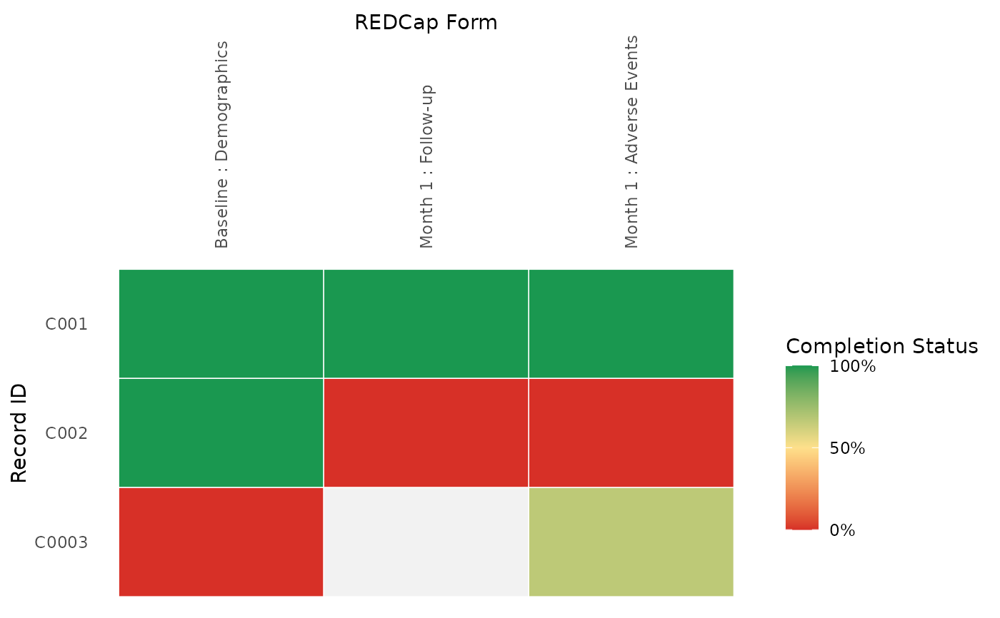
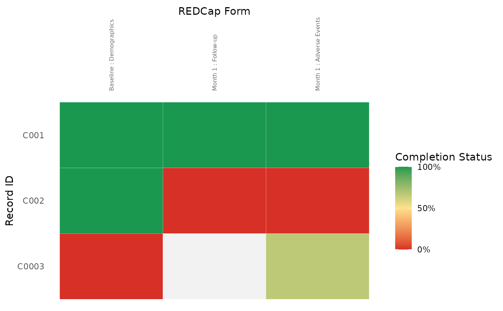

plot_record_status() creates a ggplot heat map from data returned by
get_record_status_data(). The plot is designed to resemble the REDCap
Record Status Dashboard while remaining a standard ggplot object that users
can extend with additional ggplot2 layers.
Usage
plot_record_status(
data,
record_id_field = NULL,
mode = c("standard", "compact"),
low_color = "#D73027",
mid_color = "#FEE08B",
high_color = "#1A9850",
missing_color = "grey95",
tile_color = "white",
tile_linewidth = NULL,
x_label = "REDCap Form",
y_label = "Record ID",
fill_label = "Completion Status",
rotate_x_text = TRUE,
x_text_size = NULL,
y_text_size = NULL,
x_tick_every = NULL,
y_tick_every = NULL,
show_y_title = NULL,
form_label_max = NULL
)Arguments
- data
A dataframe returned by
get_record_status_data().- record_id_field
Optional string naming the record ID column. By default, the function infers the only column other than
form_name,event_name, andpct_complete.- mode
Plot display mode. Use
"standard"for the default dashboard view or"compact"for smaller x-axis text, thinner tile borders, and truncated long form labels. Compact mode preserves the default y-axis labels and title unless those are overridden directly.- low_color
Color for
pct_complete = 0.- mid_color
Color for
pct_complete = 0.5.- high_color
Color for
pct_complete = 1.- missing_color
Fill color for missing
pct_completevalues.- tile_color
Border color for each dashboard tile.
- tile_linewidth
Border width for each dashboard tile. When
NULL, the value is chosen frommode.- x_label
X-axis label.
- y_label
Y-axis label.
- fill_label
Fill legend label.
- rotate_x_text
Whether to rotate form labels on the top axis.
- x_text_size, y_text_size
Optional axis text sizes.
- x_tick_every, y_tick_every
Optional positive integers for showing every nth x- or y-axis tick label. When
NULL, the axis is not thinned. These arguments work in both standard and compact modes.- show_y_title
Whether to show the y-axis title.
- form_label_max
Optional positive integer for truncating long form labels. When
NULL, compact mode truncates labels to 35 characters and standard mode leaves labels unchanged.
Details
The function expects one row per dashboard tile with a form_name column and
a pct_complete column. The record ID column is inferred from the remaining
data columns when possible. For longitudinal output, event_name is ignored
because event labels are already included in form_name.
pct_complete should range from 0 to 1, where 1 is complete and 0 is
incomplete or unverified. Missing values are shown with missing_color.
Examples
plot_record_status(mock_record_status_data)

plot_record_status(mock_record_status_data, mode = "compact")

if (FALSE) { # \dontrun{
data <- get_record_status_data(
redcap_uri = Sys.getenv("REDCAP_URI"),
token = Sys.getenv("REDCAP_TOKEN")
)
plot_record_status(data)
} # }